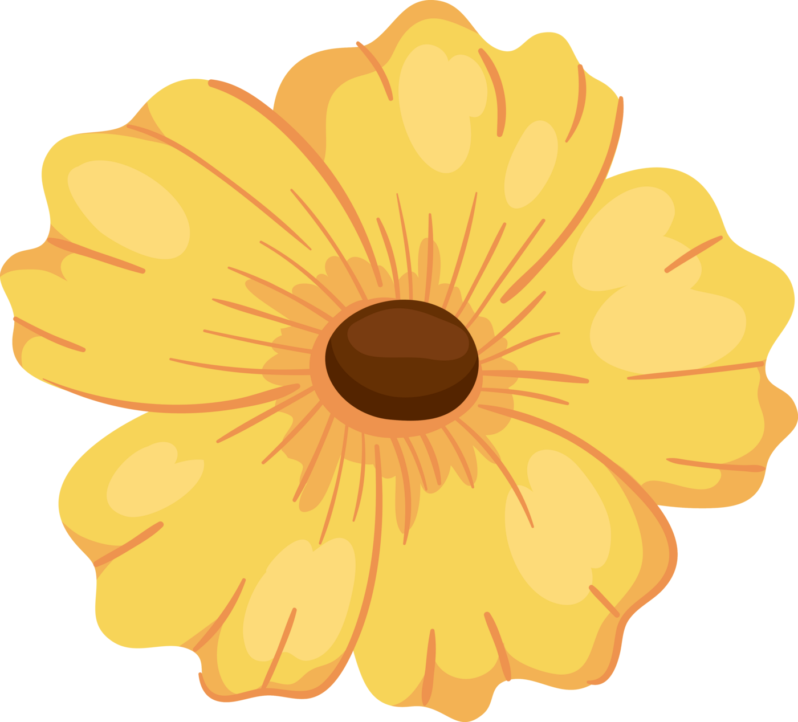

momentos felices
momentos felices
21 de septiembre
flores amarillas para ti
Una pequeña carta que viajó un poquito más lejos esta vez.
Hola amor mío, este 21 de septiembre no estás presente y desafortunadamente no puedo regalarte unas flores. Sin embargo, eso no impide que pueda tener un bonito detalle que te recuerde lo mucho que me importas.
Tengo que empezar agradeciéndote. Los últimos días de mi vida han sido difíciles y tu presencia sin duda ha significado un soporte para mí, honestamente creo que las cosas hubiesen sido distintas si tú no hubieses estado. A lo largo del tiempo me has probado múltiples veces que estás para mí y que me das importancia. Te has convertido en alguien que me hace querer ser mejor persona, que me hace querer tomar las riendas de mi vida, que me hace querer hacer un cambio, pero sobre todo, que me ha demostrado la belleza del amor.
Por esas razones, me encuentro eternamente agradecido contigo, tengo la certeza de que en ti he encontrado a una niña increíble, con un gran corazón, graciosísima, súper inteligente (me ganas en la trivia) y con grandes aspiraciones, las cuales quiero verte cumplir y, de ser posible, acompañarte durante ese proceso.
Sé que amar duele y da miedo, sé que tú tienes miedo y lo entiendo, aún así, agradezco mucho que me des la oportunidad de enseñarte cómo se siente ser importante, especial y amada, espero de todo corazón que me sigas dando esa oportunidad durante mi vida. Te amo Mey y pretendo hacerlo por mucho tiempo, así que por favor recibe esta pequeña muestra de afecto que te obsequio a pesar de la distancia.
Con amor,
Naim.
Todas estas canciones guardan un profundo significado para mí y es por eso que he decidido hacerte una playlist con ellas (Tranquila, la hice en YouTube Music porque sé que no usa Spotify).
